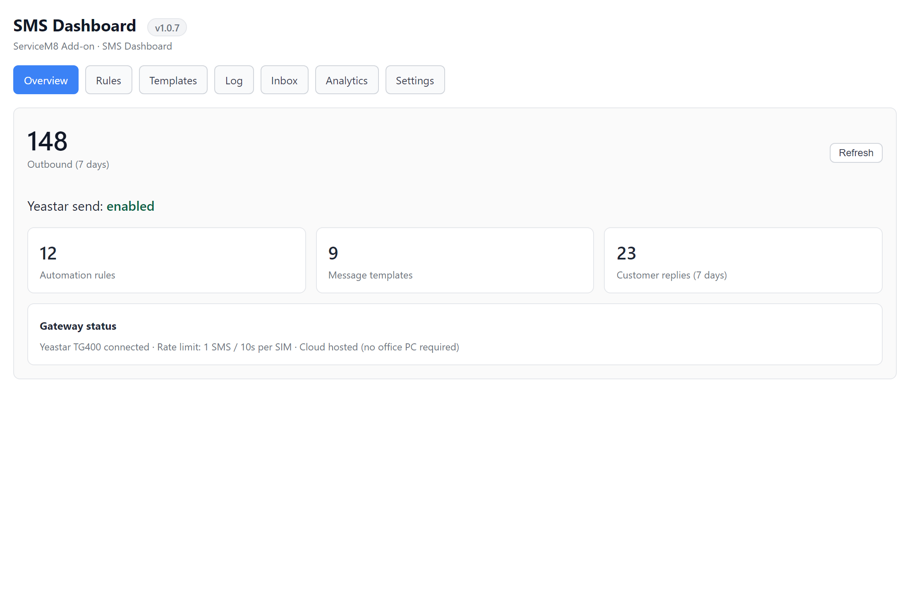
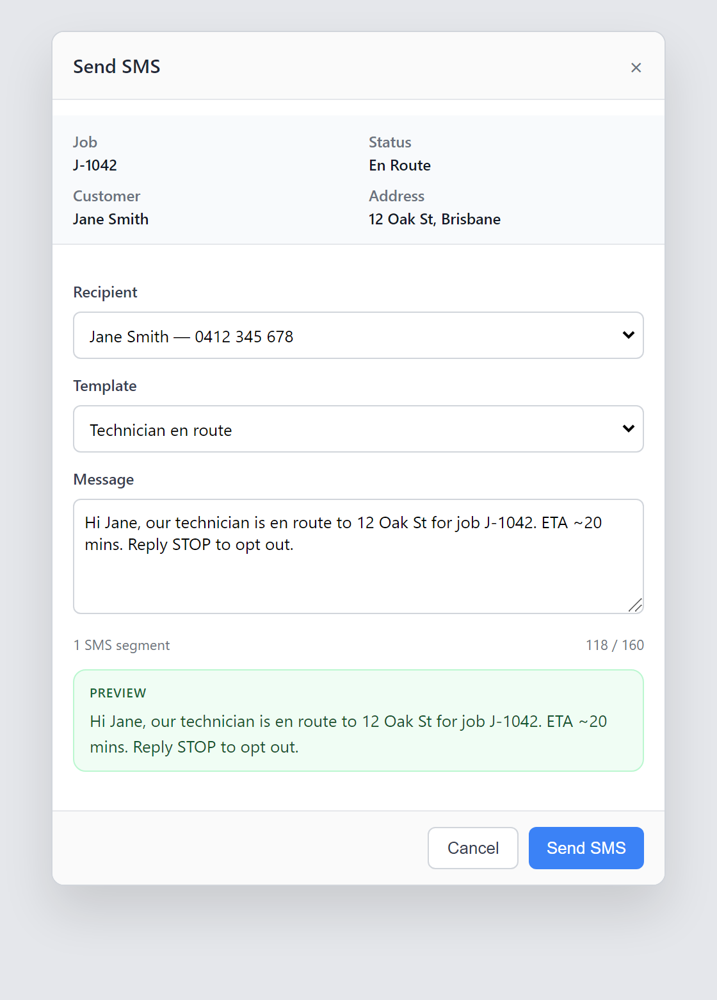
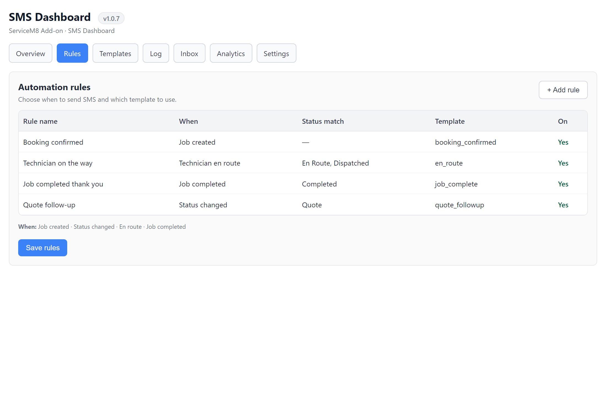
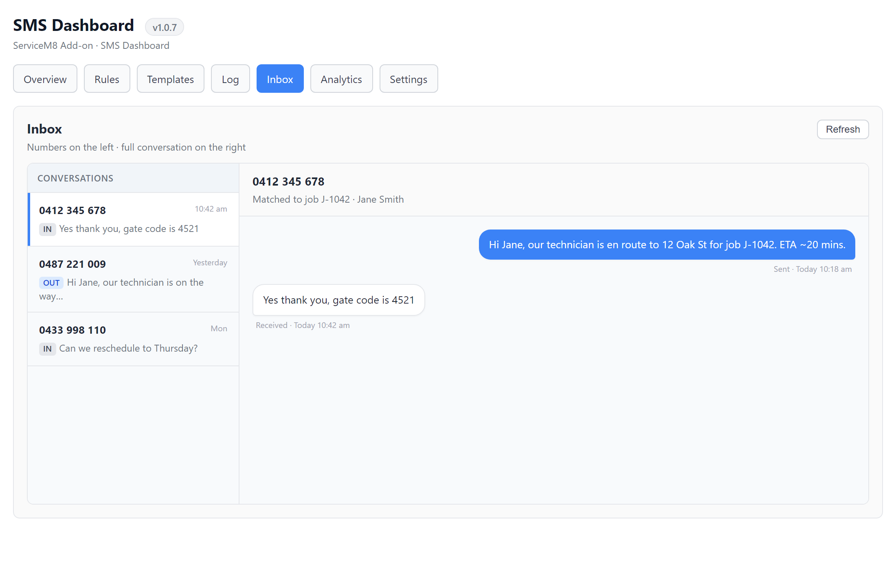

User guide
How it works, and how to get the most from it
The add-on is live inside ServiceM8. Automatic job texts, manual Send SMS, inbox, and delivery log all run through your Yeastar TG400. It has been tested by our team and by yours.
Staff stay in ServiceM8. The add-on sends and receives SMS using your own SIM numbers on the Yeastar gateway.
When a job is created, a tech goes en route, or a job is completed, the customer can be texted automatically.
Open any job, pick a recipient and template, preview, and send — without leaving ServiceM8.
Customer replies appear in a conversation view, matched to the job by mobile number.
Every outbound SMS is logged. A note is also written on the ServiceM8 job so the team can see what was sent.
ServiceM8 → cloud app → office router → Yeastar TG400 → customer’s phone
| What you want | Where to go |
|---|---|
| Manage automations, templates, inbox, log | Add-ons → SMS Dashboard |
| Text someone about a specific job | Open the job → Send SMS action |
If the dashboard looks blank or Send SMS can’t load job details, go to SMS Dashboard → Settings → Reconnect OAuth once, then try again.

Overview — 7-day send count, gateway status, and the other tabs along the top
Use this for one-off messages: “we’re 10 minutes away”, a gate-code request, a reschedule, a quote nudge. Automation cannot cover every situation — this is how you stay personal.

Job Send SMS — recipient, template, live preview, then send
The composer also shows recent messages for that job, so you don’t repeat yourself. Aim for one SMS segment (about 160 characters) when you can — longer messages still send, they just use more segments.
Open SMS Dashboard → Automation. Each rule answers three questions: when, what to say, and who gets it.

Automation — map job events to a template. Turn a rule off if you don’t want that text.
| When | Typical use | Watch-out |
|---|---|---|
| Job created | Booking received / we’ll be in touch | Fires once when the job is first created |
| Status changed | Quote sent, work order, cancelled | If you leave “Status becomes” blank, it can fire on every status change. Set a specific status, or turn this rule off. |
| Technician en route | Tech is on the way | Only fires if the job status matches Settings (default: En Route, Dispatched). Labels must match ServiceM8. |
| Job completed | Thank-you / job done | Fires when status becomes Completed |
After you add or edit rules, tap Save automations. A disabled rule never sends.
There are two template lists. They look similar; they are used in different places.
| Where you write it | Used by | Placeholder style |
|---|---|---|
| Internal templates (Templates tab) | Automation rules | {{customerName}} {{jobNumber}} {{address}} {{status}} |
| ServiceM8 templates (same tab, or ServiceM8 itself) | Send SMS on a job | {job.contact_first} {job.generated_job_id} {job.job_address} {vendor.name} |
Click the chips above the message box to insert fields. Always check the live preview — empty job fields are left blank rather than showing the tag.
| Situation | Example |
|---|---|
| New job | Hi {{customerName}}, we received job {{jobNumber}}. We’ll be in touch soon. — Tom’s Pest Control |
| En route | Hi {{customerName}}, our technician is on the way to {{address}} for job {{jobNumber}}. |
| Completed | Hi {{customerName}}, job {{jobNumber}} is complete. Thanks for choosing Tom’s Pest Control. |
Open Inbox. Numbers are on the left; tap one to see the full thread. Replies are matched by mobile number. Refresh if you just received a text.

Inbox — pick a number, read the conversation, see the matched job
Make this a habit: check Inbox at the start of the day and after lunch. Gate codes, “we’re not home”, and reschedule requests land here — not in email.
Every outbound SMS is listed with time, number, status, and a short body preview. If a customer says they never got a text, start here. Status sent means the gateway accepted it. failed means it did not go out — the Detail column usually says why.
A simple 7-day outbound count plus how many inbound messages are stored. Use it to see whether volume looks normal, not as a full report pack.
| Setting | What it does |
|---|---|
| En-route status labels | Comma-separated ServiceM8 statuses that mean “tech is on the way” (default: En Route,Dispatched). Must match your job status names exactly. |
| Test Yeastar | Confirms the cloud app can still reach the office gateway. Use this if sends suddenly stop. |
| Reconnect OAuth | Re-authorises ServiceM8. Use if the dashboard or Send SMS can’t load jobs/templates. |
The add-on is already working. These are the habits that make it earn its keep.
Most pest-control jobs only need: booking received, quote follow-up (if you quote), tech on the way, job done. Turn off everything else so customers are not spammed.
Automation and Send SMS both need a mobile on the job or company. No number = silent skip. Make this part of booking, not an afterthought.
If your board says “On Route” but Settings still say “En Route”, the en-route text will never send. Copy the label from ServiceM8.
Automation covers the standard journey. Staff should still send a quick text for access issues, “running late”, or “please confirm tomorrow”.
A reply sitting unread is a customer waiting. Assign someone to watch Inbox during office hours.
Use your company name, not a generic sender. Preview every new template once with a real job before you rely on it.
| Rule | On? | Send to |
|---|---|---|
| New job — we received your booking | Yes | Job contact |
| Status = Quote — follow up / quote is ready | Only if you quote by SMS | Job contact |
| En route — technician on the way | Yes (highest value text) | Job contact |
| Completed — thank you | Yes | Job contact |
| Catch-all “any status change” | Off | — |
| What you see | What to try |
|---|---|
| Send SMS says no mobile | Add a mobile on the job or company contact, then reopen Send SMS. |
| Send SMS says no templates | Settings → Reconnect OAuth, then add a ServiceM8 template from the Templates tab. |
| Automation didn’t fire | Is the rule on and saved? Does the status label match? Does the contact have a mobile? Check the Log. |
| Customer didn’t receive it | Check Log status. If it says sent, the number or handset is the next place to look. If failed, use Detail and Test Yeastar. |
| No replies in Inbox | Customer must text the same number the SMS came from. Refresh Inbox. Confirm the Yeastar is on. |
| Dashboard blank | Hard-refresh the add-on iframe, then Reconnect OAuth. |
If Test Yeastar fails, the office internet, port-forward, or Yeastar itself needs a look — the ServiceM8 side is usually fine.
Confirm a mobile is on the contact before the job goes to the field.
Check Inbox twice a day. Reply from the job with Send SMS when needed.
Skim the Log. If volume dropped to zero, Test Yeastar and check the gateway is on.